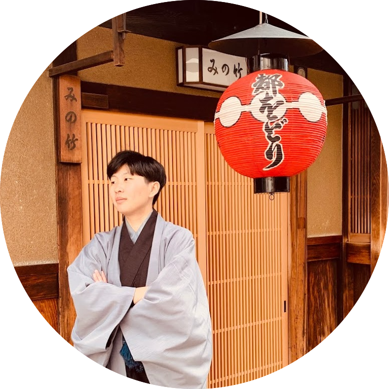

Ya-wen Jeng

I graduated from National Taiwan University with a master’s degree in Computer Science and Information Engineering. I was an exchange student at Rheinisch-Westfälische Technische Hochschule Aachen (RWTH Aachen) in Germany for one year during 2019/2020.
My research interests include blockchain technologies, privacy and security and applied cryptography. I am doing research as a research assistant for Communication and Multimedia lab (CMLab) at National Taiwan University.
If you would like to know more about me, please view my CV, projects, and blog.